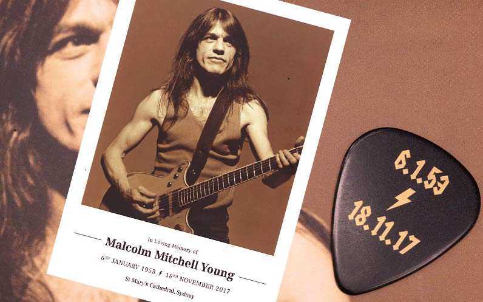
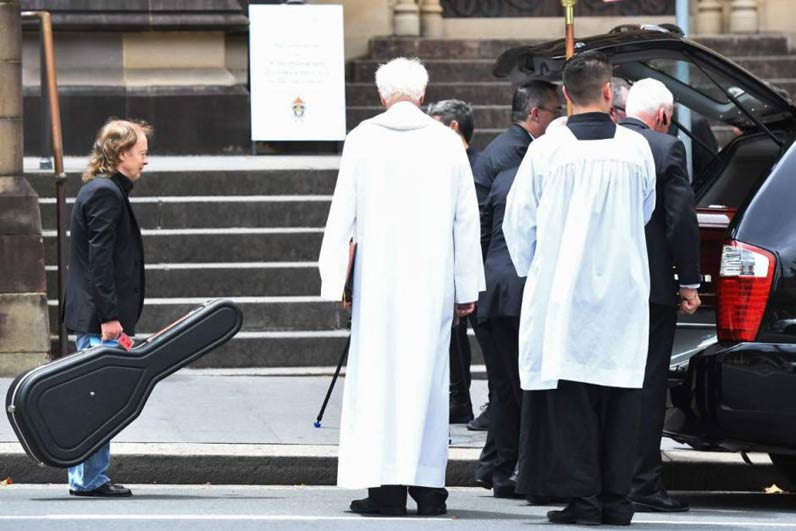

home > news > Fecha Posteo: 28 de noviembre de 2017 - Malcolm Young Se Despidió En Sydney St Mary’s Cathedral
Malcolm Young Se Despidió En Sydney St Mary’s Cathedral
28 Noviembre 2017
El mundo conocía al fundador de AC / DC, Malcolm Young, como uno de los mejores guitarristas de ritmos de rock de todos los tiempos.
Su familia reveló tantas facetas diferentes al extremadamente reservado músico de 64 años cuando lo despidieron en la Catedral de Santa María en Sydney hoy.
En representación del hermano de Malcolm, Angus, su esposa O'Linda y sus hijos Cara y Ross, el sobrino Bradley Horsburgh compartió que el legendario rockero también era un apasionado del fútbol, amaba las películas de comedia tontas y era una catástrofe en torno a los barcos.
Él agasajó a los dolientes que incluían a la familia, el líder de AC / DC Brian Johnson, el baterista Phil Rudd, el bajista Cliff Williams, el sobrino y guitarrista Stevie Young, los rockeros australianos Jimmy Barnes, John y Rick Brewster de The Angels, Angry Anderson de Rose Tattoo, Mark Evans, el promotor Garry Van Egmond y el presidente de Sony, Denis Handlin, con divertidas historias sobre los desastres de navegación de Malcolm.
"Era famoso por el ritmo, pero infame por sus habilidades de navegación", dijo Horsburgh entre risas antes de detallar contratiempos, incluido el hundimiento de un velero y un yate que se incendió.
"Casi podríamos culparlo personalmente por el aumento del nivel del mar causado por demasiadas anclas perdidas en el mar".
Horsburgh dijo que Malcolm, siempre listo con una sonrisa radiante, reuniría a la familia cada Nochevieja en su mansión de Balmain y colocaría a cada miembro para disfrutar de la mejor vista de los fuegos artificiales. "Debe haber estado de puntillas en algún lugar del fondo", dijo.
Antes de convertirse en una de las estrellas de rock más grandes del planeta, el primer trabajo de Young al salir de Ashfield Boys High School fue como maquinista en la fábrica de sujetadores Hestia en el oeste de Sydney.
A medida que AC / DC trascendió sus raíces suburbanas desde su primer concierto en la víspera de Año Nuevo en 1973 en el club nocturno Chequer en Sydney para comandar estadios en casi todos los países y culturas del planeta, Malcolm siguió siendo la fuerza impulsora silenciosa, humilde pero acerada y astuta detrás de la banda. Mantuvo un firme control sobre sus raíces de clase trabajadora y estuvo "siempre a dos pasos del centro de atención".
Malcolm compró en Gowings su uniforme característico: jeans y camisetas negras. El Salón de la Fama del Rock 'n' Roll tuvo que relajar su estricto código de vestimenta cuando AC / DC fue incorporado en 2003 o el fundador de la banda no asistiría.
David Albert, en representación del sello y la familia del estudio que firmó por primera vez con AC / DC y permaneció leal a la banda durante más de cuatro décadas, también recordó a Malcolm como un individuo modesto, así como un cerebro de la música y una leyenda del rock que continúa inspirando a generaciones para coge una guitarra.
AC / DC ha vendido más de 200 millones de álbumes a lo largo de su carrera, con Back In Black como el segundo álbum más vendido de todos los tiempos, y su música ha encontrado audiencias más jóvenes en la era digital con sus canciones que ya superan los miles de millones de reproducciones.
Albert dijo que la amplitud de la influencia de Malcolm en el panorama del rock'n'roll a lo largo de las décadas se evidenció en la gran cantidad de tributos y respeto de compañeros como Paul Stanley, Eddie Van Halen, Ozzy Osbourne y Dave Grohl y miles de fanáticos.
Celebró la visión intransigente de Malcolm como un láser para el futuro de la banda y el vínculo especial y a menudo intenso que compartía con Angus, quien también está de luto por la reciente pérdida de su hermano mayor George.
“Angus, tu fuerza, coraje y apoyo han sido verdaderamente notables”, dijo.
Monseñor Tony Doherty citó la celebración del rock 'n' roll de la autora Nora Roberts al rendir homenaje a Malcolm, y les dijo a los cientos de dolientes que incluían devotos fanáticos que “de vez en cuando, y solo de vez en cuando, aparece alguien que realmente entiende, que tiene el don de transferir todas esas necesidades y emociones a la música ".
Reveló que se había sometido a un curso intensivo de música de AC / DC en las últimas semanas y que había visitado a Malcolm cuando estaba a cargo de la demencia hace menos de un año.
“Este genio de la música y el canto había sido cruelmente silenciado. Qué extraño ”, dijo Monseñor Doherty.
“Sentado en su habitación con ... uno de los mejores guitarristas rítmicos del mundo, su amada guitarra Gretsch en la pared y un piano eléctrico, fue un momento verdaderamente angustioso.
"Pero de alguna manera todavía había vida, vitalidad y gran amor en esa habitación".
Monseñor dijo que Malcolm y Angus eran "dadores de vida".
"Su música y su narración tocaron un fuego apasionado dentro de nosotros", dijo.
Si bien las campanas de la catedral pueden haber sustituido a las clásicas Hells Bells de AC / DC, el servicio fue tradicional, con himnos como Amazing Grace, The Lord Is My Shepherd y Jerusalem que acompañaron el servicio solemne en lugar de cualquiera de los éxitos de la banda.
Malcolm fue escoltado fuera de la iglesia por su hijo Ross y Angus, llevando la guitarra de su hermano que había sido colocada en la parte superior del ataúd durante las oraciones, con su esposa O’Linda y su hija Cara siguiéndola mientras los gaiteros tocaban Waltzing Matilda.
Mientras los dolientes y una multitud que había aumentado a cientos observaban fuera de la iglesia, la banda de tambores y flautas de Scots College tocó It's A Long Way To The Top mientras el cortejo se dirigía hacia College St para llevar a Malcolm a su lugar de descanso final.


Archivo
09 julio 2021: Lanzamiento Del Sitio Web Oficial De Bon Scott
03 mayo de 2021: Brian Johnson Actúa Con Foo Fighters En El Evento VaxLive
12 de abril de 2021: Brian Johnson Publicará La Autobiografía "The Lives Of Brian" El 26 De Octubre
07 de abril de 2021: Disco De Imágenes De AC / DC Para El Día De La Tienda De Discos 12 De Junio
07 de abril de 2021: Entrevista Recién Descubierta Con Bon Scott De 1976
09 de enero de 2021: Se Han Encontrado Pistas De Lost Fraternity Con Bon Scott
23 de noviembre de 2020: "Power Up" En El N. ° 1 En 20 Países
07 de octubre 2020: Nuevo Álbum De AC / DC "PWR / UP" A La Venta El 13 De Noviembre
05 de octubre 2020: Nuevo Single "Shot In The Dark" A La Venta El Miércoles
30 de septiembre de 2020: AC / DC Confirma Nueva Alineación
10 de diciembre de 2019: Certificado "Back In Black" 25 Veces Platino En EE. UU.
--sin noticias--
28 de noviembre de 2017: Malcolm Young Se Despidió En Sydney St Mary’s Cathedral